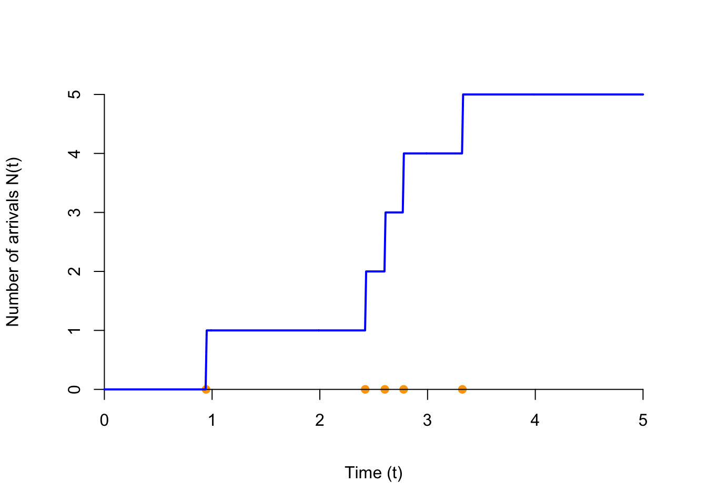
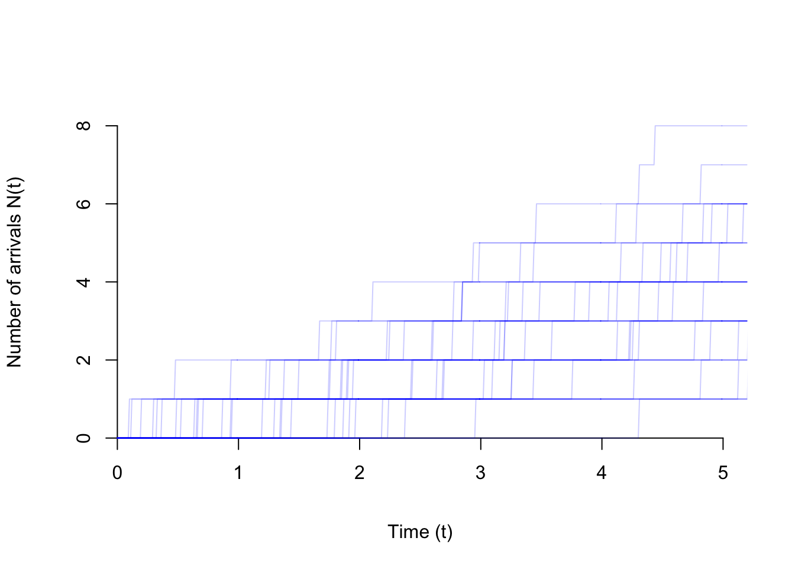
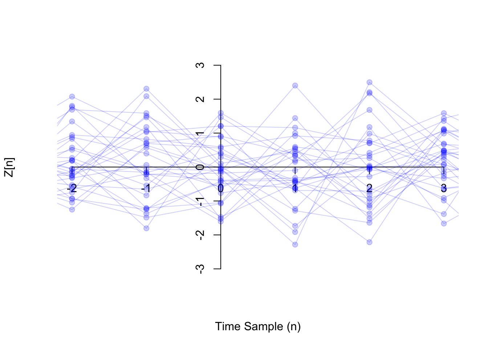
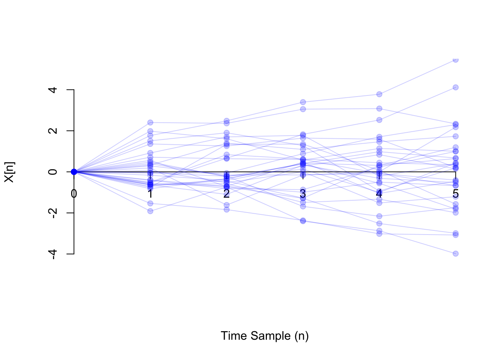

Lesson 47 Random Processes
Motivation
A signal is a function of time, usually symbolized \(x(t)\) (or \(x[n]\), if the signal is discrete). In a noisy signal, the exact value of the signal is random. Therefore, we will model noisy signals as a random function \(X(t)\), where at each time \(t\), \(X(t)\) is a random variable. These “noisy signals” are formally called random processes or stochastic processes.
Theory
Definition 47.1 (Random Process) A random process is a collection of random variables \(\{ X_t \}\) indexed by time. Each realization of the process is a function of \(t\). For every fixed time \(t\), \(X_t\) is a random variable.
Random processes are classified as continuous-time or discrete-time, depending on whether time is continuous or discrete. We typically notate continuous-time random processes as \(\{ X(t) \}\) and discrete-time processes as \(\{ X[n] \}\).We have actually encountered several random processes already.
Example 47.1 (Poisson Process) The Poisson process, introduced in Lesson 17, is a continuous-time random process.
Define \(N(t)\) to be the number of arrivals up to time \(t\). Then, \(\{ N(t); t \geq 0 \}\) is a continuous-time random process.
We can now restate the defining properties of a Poisson process (Definition 17.1) using \(\{ N(t) \}\).
- \(N(0) = 0\).
- \(N(t_1) - N(t_0)\), the number of arrivals on the interval \((t_0, t_1)\), follows a Poisson distribution with \(\mu = \lambda (t_1 - t_0)\)
- Independent increments: The number of arrivals on non-overlapping intervals are independent.

Shown below are 30 realizations of the Poisson process. At any time \(t\), the value of the process is a discrete random variable that takes on the values 0, 1, 2, ….

Example 47.2 (White Noise) In several lessons (for example, Lesson 32 and 46), we have examined sequences of independent and identically distributed (i.i.d.) random variables. A sequence of independent and identically distributed random variables \(.., Z[-2], Z[-1], Z[0], Z[1], Z[2], ...\) is called white noise. White noise is an example of a discrete-time process.
The graph below shows one realization of white noise, where \(Z[n]\) is a standard normal random variable. This process is only defined at integer times \(n=-2, -1, 0, 1, 2, ...\) (even though we have connected the dots).
Shown below are 30 realizations of the white noise process. Notice how the distribution of \(Z[n]\) looks similar for every \(n\). This is because we constructed the process by simulating an independent standard normal random variable at every time \(n\).

Example 47.3 (Random Walk) In Lesson 31, we studied the random walk. More precisely, we studied a special case called the simple random walk.
In general, a (general) random walk \(\{ X[n]; n \geq 0 \}\) is a discrete-time process, defined by \[\begin{align*} X[0] &= 0 \\ X[n] &= X[n-1] + Z[n] & n \geq 1, \end{align*}\] where \(\{ Z[n] \}\) is a white noise process. In other words, each step is a independent and random draw from the same distribution.
Let’s work out an explicit formula for \(X[n]\) in terms of \(Z[1], Z[2], ...\). \[\begin{align*} X[0] &= 0 \\ X[1] &= \underbrace{X[0]}_0 + Z[1] = Z[1] \\ X[2] &= \underbrace{X[1]}_{Z[1]} + Z[2] = Z[1] + Z[2] \\ X[3] &= \underbrace{X[2]}_{Z[1] + Z[2]} + Z[3] = Z[1] + Z[2] + Z[3] \\ & \vdots \\ X[n] &= Z[1] + Z[2] + \ldots + Z[n]. \end{align*}\]
In a simple random walk, the steps are i.i.d. random variables with p.m.f. \[ \begin{array}{r|cc} z & -1 & 1 \\ \hline f(z) & 0.5 & 0.5 \end{array}. \] See Lesson 31 for pictures of a simple random walk.
Below, we show one realization of a random walk, where the steps \(Z[n]\) are i.i.d. standard normal random variables (i.e., the process considered in Example 47.2).
Now, we show 30 realizations of the same random walk process. Notice how the distribution of \(X[n]\) is different for each \(n\). In the Essential Practice below, you will work out the distribution of each \(X[n]\).

Essential Practice
Radioactive particles hit a Geiger counter according to a Poisson process at a rate of \(\lambda=0.8\) particles per second. Let \(\{ N(t); t \geq 0 \}\) represent this Poisson process.
- What is the distribution of \(N(1.2)\)? (Hint: Translate this into a statement about the number of arrivals on some interval.) Calculate \(P(N(1.2) > 1)\).
- What is \(P(N(2.0) > N(1.2))\)? (Hint: Translate this into a statement about the number of arrivals on some interval.)
Let \(\{Z[n]\}\) be white noise consisting of i.i.d. \(\text{Exponential}(\lambda=0.5)\) random variables.
- What is \(P(Z[2] > 1.0)\)?
- What is \(P(Z[3] > Z[2])\)?
Let \(\{ X[n] \}\) be a random walk, where the steps are i.i.d. standard normal random variables. What is the distribution of \(X[n]\)? (Your answer should depend on \(n\).) What is \(P(X[100] > 20)\)?
(Hint: What do you know about the sum of independent normal random variables?)